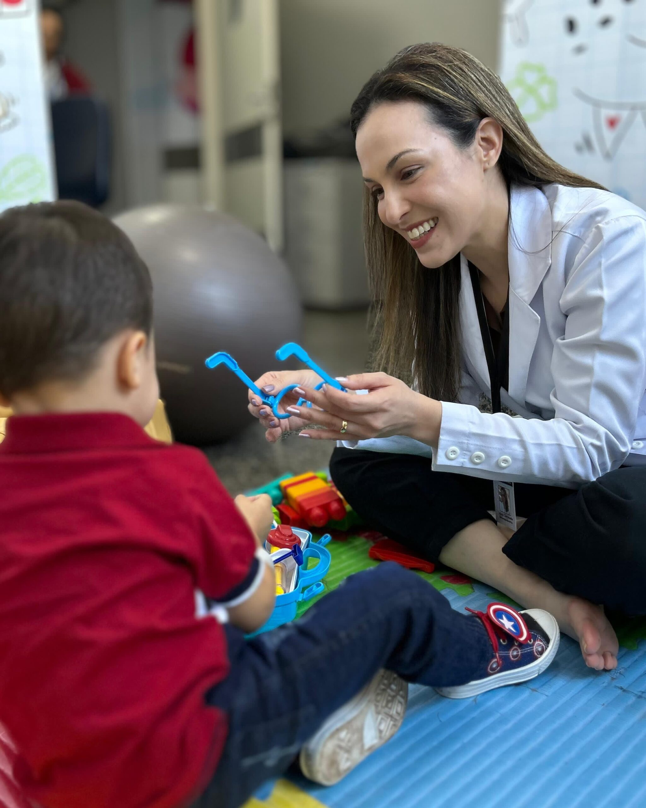
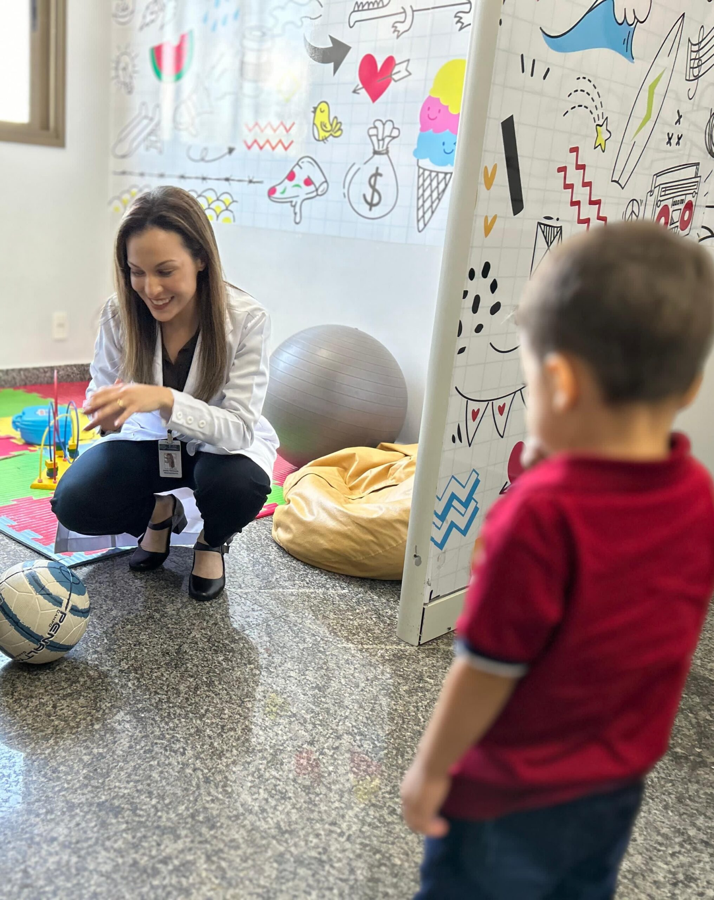

NEUROPEDIATRA
DRA JEANIA DAMASCENONeuro

Especialidades
Cuidado Especializado em Neurodesenvolvimento Infantil
Atendimento de crianças e adolescentes com demandas neurológicas e problemas no neurodesenvolvimento através de técnicas científicas comprovadas
Atendimento Integrado em Neurologia e Desenvolvimento
Atendimento em planos de acompanhamento com discussão do caso com todos envolvidos no seguimento do paciente, incluindo médicos de outras especialidades, terapeutas e pedagogos
Serviços Avançados em Neurologia Pediátrica
Pareceres em ambiente hospitalar. Avaliação e acompanhamento em neurodesenvolvimento com abordagem científica e atuação multidisciplinar.
Educação e Difusão do Conhecimento em Neurodesenvolvimento
Palestras em simpósios, seminários e congressos científicos voltados ao neurodesenvolvimento e neurologia infantil
Formação
- Especialização em neurologia infantil pela Faculdade de Medicina de São Paulo (FMUSP-SP)
- Título de especialista em Neurologia Pediátrica pela Academia Brasileira de Neurologia e Sociedade Brasileira de Pediatria
Profissional

Campo de atuação
A Neurologia Infantil, também conhecida como Neuropediatria, é a especialidade que avalia o sistema nervoso central e periférico de crianças e adolescentes. O neuropediatra profissional acompanha o desenvolvimento neurológico das crianças e através de exame clínico detalhado além da análise das aquisições motoras, cognitivas e de linguagem ao longo do tempo ele é capaz de diagnosticar e conduzir o tratamento de patologias neurológicas da infância. Mesmo com os recursos de exames complementares e até mesmo as informações obtidas pelos cuidadores com utilização da internet e de inteligências artificiais, o contato olho no olho e o exame físico da criança é insubstituível.
Dentre os principais problemas avaliados por um neurologista infantil estão: Dificuldades escolares, autismo, dores de cabeça, transtorno de déficit de atenção e hiperatividade (TDAH), crianças prematuras, tics, alteração do tamanho e da forma da cabeça, epilepsia e crise convulsiva, meningite, dificuldade para caminhar ou falar, hipotonia (bebê “molinho”), distúrbios do sono, paralisia cerebral, doenças neuromusculares, erros inatos do metabolismo, doenças degenerativas e síndromes genéticas.
Experiência Profissional
Responsável por Ambulatório de Doenças Raras (GO)
Médica responsável pelo ambulatório de neurologia do Serviço de Doenças Raras do Estado de Goiás.
Preceptora em Residência de Neurologia (UFG)
Médica parceira da residência em Neurologia do Hospital das Clínicas da Universidade Federal de Goiás
Atuação em Neurologia Pediátrica de Alta Complexidade
Neurologista de serviços de alta complexidade em pediatria em Goiânia
Experiência em Equipes Multidisciplinares (TEA e DI)
Experiência há mais de 10 anos na atuação em equipes multidisciplinares com foco em autismo e deficiência intelectual
Docente em Pós-Graduação em Saúde e Educação
Professora em cursos de pós-graduação em saúde e educação
Palestrante em Eventos Científicos
Palestrante em simpósios, seminários e congressos científicos
24 anos
Depoimentos
Artigos
Tire dúvidas lendo nossos artigos

Convulsão Febril em Crianças: é perigosa?
A convulsão febril criança assusta, mas geralmente é benigna. Saiba por que acontece, quando é perigosa e como agir corretamente durante a crise para garantir a segurança da criança.

Meu filho está demorando para falar: quando buscar ajuda?
Nem toda demora para falar indica problema, mas alguns sinais exigem atenção. Entenda quando é apenas o tempo da criança e quando pode ser necessário investigar causas neurológicas ou buscar ajuda profissional.

Criança que anda na ponta dos pés: é fase normal ou sinal de alerta?
Andar ponta dos pés pode ser uma fase comum, mas também pode indicar necessidade de avaliação. Entenda quando esse comportamento é normal e quando pode ser um sinal de alerta no desenvolvimento infantil.
Na Mídia
Artigos, entrevistas e participações
Teia Cast - Dra. Jeania Damasceno & Nise Portela
Pautas da Igreja | Entenda tudo sobre o TDAH - 20/04/2026